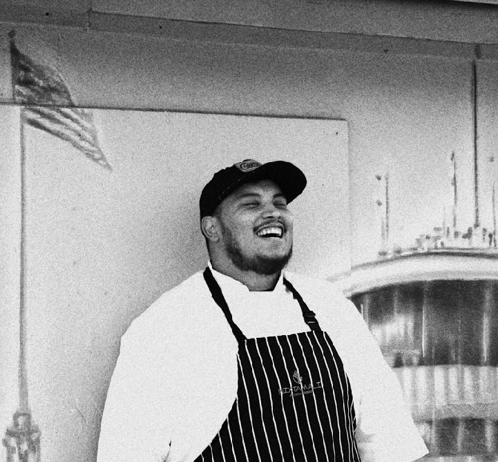
Pete Quinones IV
Fueling athletes + building the dream
I'm a former line cook building businesses, building endurance, and documenting the process from San Antonio, Texas.
I spent more than 12 years working in kitchens. Long shifts, hot lines, prep lists, and dinner rushes taught me how to stay calm, move fast, and keep showing up when I'm tired.
Eventually, I stopped waiting for the perfect time and started building my own thing. Today I'm growing Kaizen Fuel Kitchen, building The Kaizen Tribe, training for endurance events, and sharing what I learn along the way.
I'm interested in food, discipline, business, endurance, documenting, and the process of becoming who you say you are.
Latest note: The compounding power of just showing up — July 2026
01 / Projects
Current bets + projects
Kaizen Fuel Kitchen ↗
Performance meal prep · San Antonio
The Kaizen Tribe ↗
Internet friends trying to become harder to kill
Letters from The Kaizen Tribe ↗
A weekly field note documenting the journey from line cook to disciplined founder — building Kaizen Fuel Kitchen + fueling athletes
Train. Fuel. Build. — 56-Day Sprint BETA
A streak tracker for people who actually want to change
The Endurance Project ↗
Running, endurance training, and the daily miles
images on my computer in a folder named "keep going" inspired by jack friks

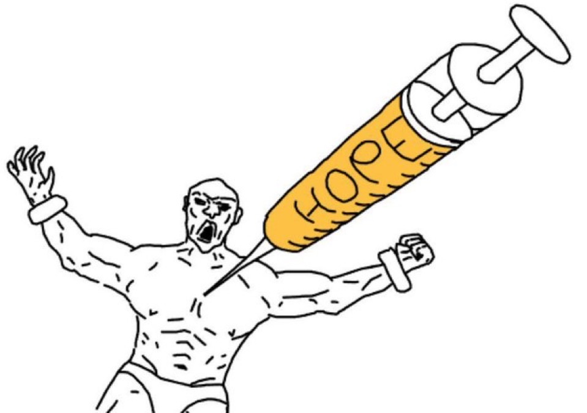
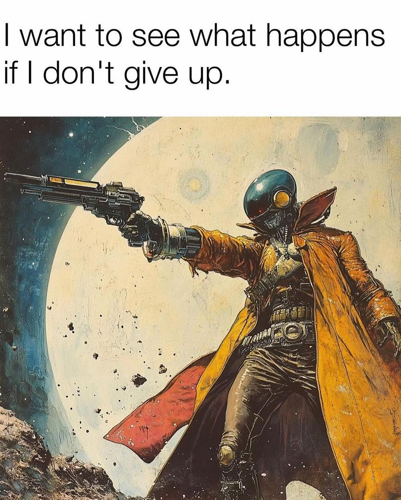
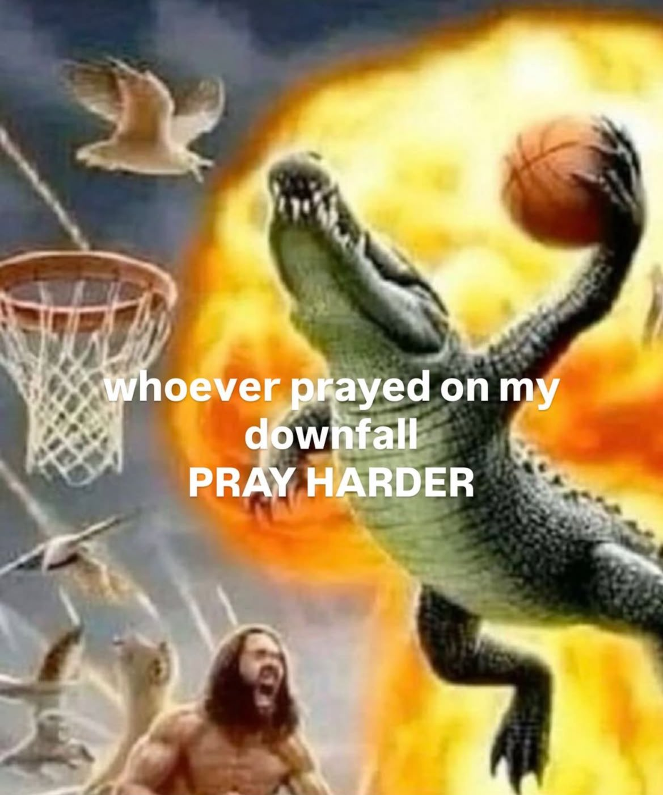
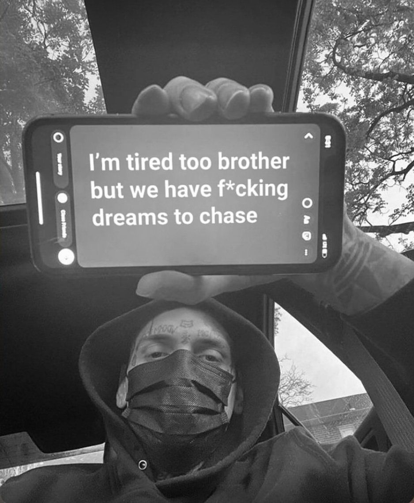
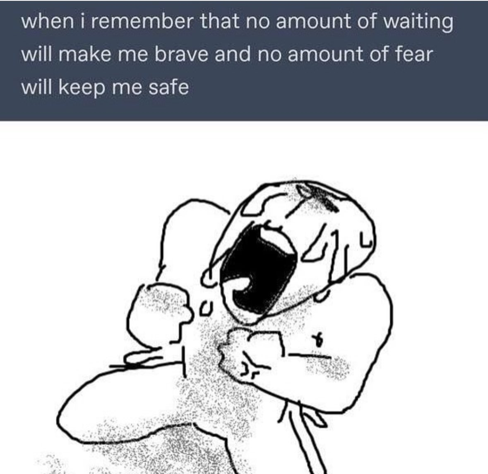
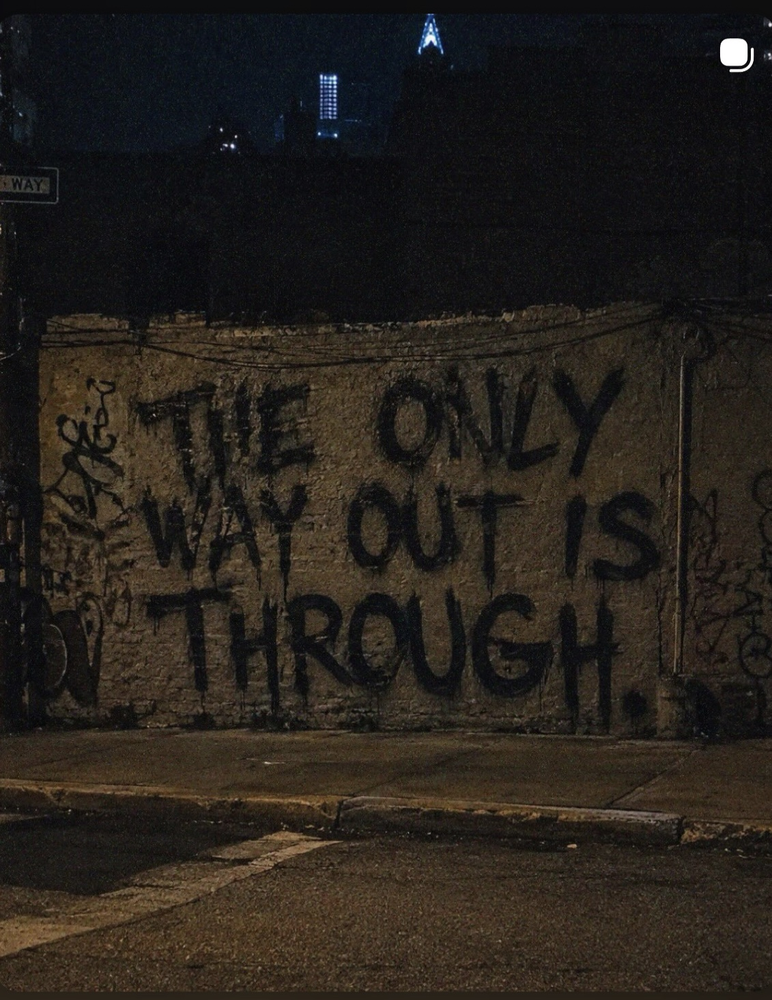
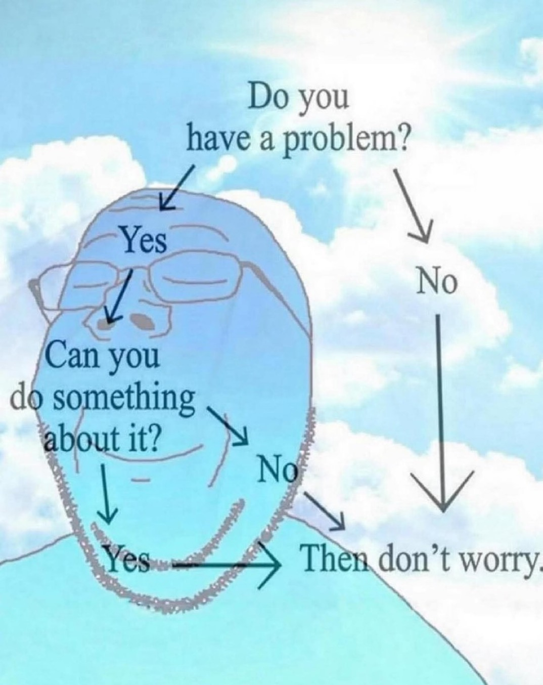
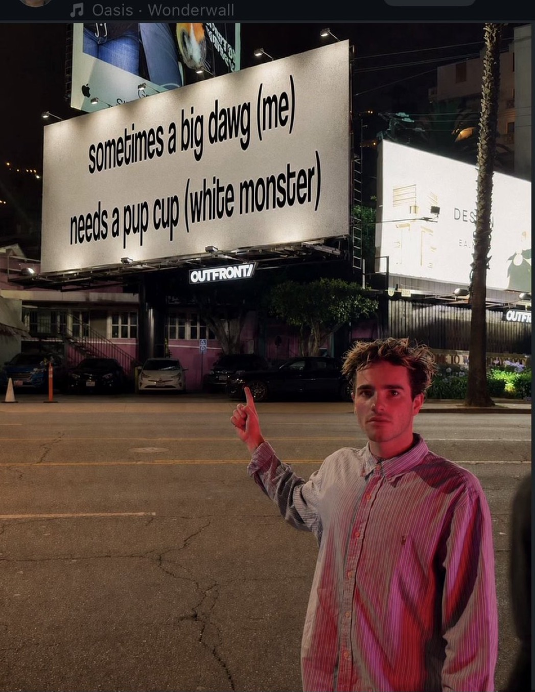
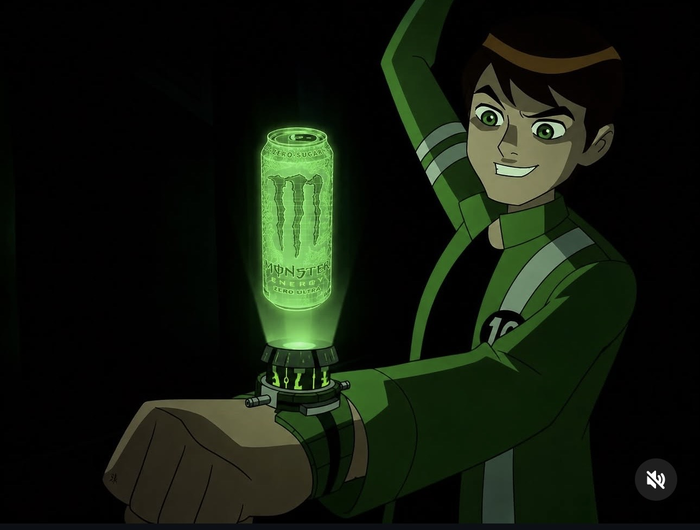
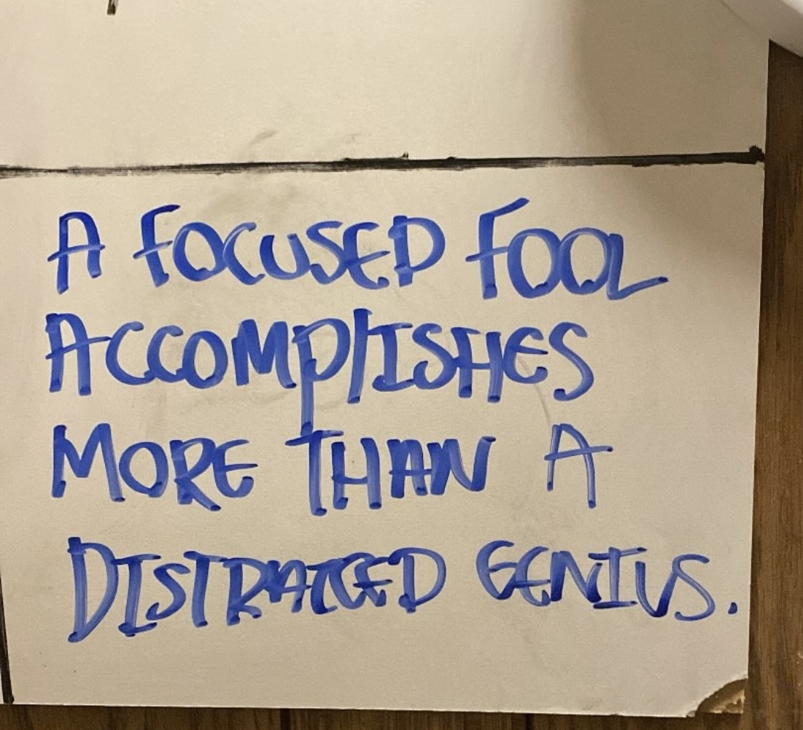
02 / Contact
Shoot me a message →
Letters from The Kaizen Tribe
A weekly field note documenting the journey from line cook to disciplined founder — building Kaizen Fuel Kitchen + fueling athletes